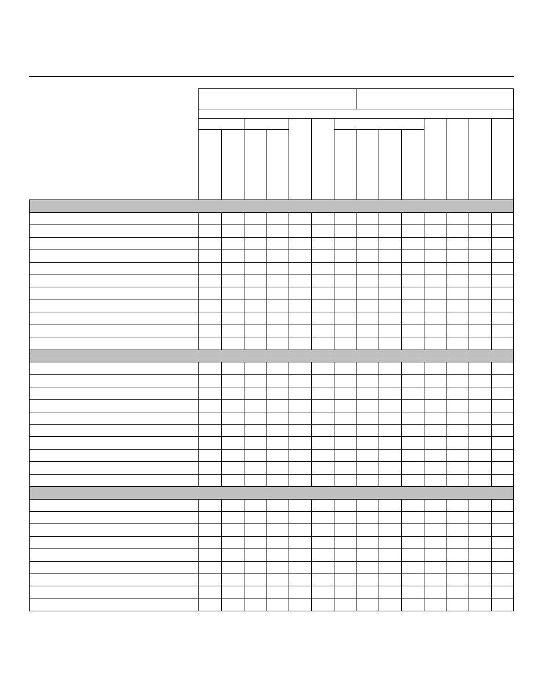

CITY OF WILLIAMSBURG
Fiscal Year 2009 Operating Budget GOALS & INITIATIVES
THE CITY’S VISION
Williamsburg will become an evermore safe, beautiful, livable city of historic and
academic renown, served by a city government--cohesively led, financially
strong, always improving--in full partnership with the people who live, work and
visit here".
CITY COUNCIL’S BIENNIAL GOALS AND INITIATIVES
To advance this vision, every two years the Williamsburg City Council identifies new
strategic objectives for city government. The Biennial Goals and Initiatives provide an
expression of city current priorities, as specific and measurable as possible, covering a
two year period. Longer term objectives are expressed in terms of what the city hopes
to accomplish in the next two years toward that objective. The 2007/2008 Biennial
Goals and Initiatives, adopted in November 2006, guide budget decisions for two years,
that is for FY 08 and FY 09. They are organized under nine goal statements with 78
specific initiatives identified.
The Biennial Goals and Initiatives are created in light of a variety of resources including
the city's Comprehensive Plan, Five Year Capital Improvement Program, and Economic
Development Strategic Plan; with input from citizens, city staff, and volunteers. Biennial
goal statements directly align with the recently adopted 2006 Comprehensive Plan
goals.
The Biennial Goals and Initiatives are not intended to be a comprehensive list of all city
services and activities. Instead, they provide a concrete, coordinated expression of City
Council's direction for change and focus in the near future. In that way, they drive city
government operating budget and capital budget formation.
Under the Capital Improvements section of this budget, capital projects are expressly
linked to Goals and Initiatives.
Under this tab is a detailed report showing:
The Goals and Initiatives as adopted (in black).
Actions taken, and successes achieved, to accomplish each Initiative; and
actions enabled by the Proposed Budget and CIP
(in red).
“Desired Outcomes” and Observed Results” for each of the nine major
goals are performance targets and measures which help assess goal
achievement (in blue).
B - 1
2007 and 2008 Biennium Goals and Initiatives
Status Report
and
Outcomes and Results
Initiatives referenced in the City’s FY 09-13 Capital Improvement Plan are designated
with the
symbol.
I
.
Character of the City
Protect and enhance Williamsburg’s unique character—the historic
area, college, entrance corridors, urban environment, and open
spaces.
Redevelopment Focus Area
Assist and encourage redevelopment of underused commercial properties, and new
infill projects, during the biennium especially on:
Continued marketing of the Demolition Program in partnership with the City’s EDA to
encourage redevelopment.
• Richmond Road between Brooks Street and Ironbound Road
The EDA authorized its first Demolition Program award to the owners of the
Southern Inn at 1214 and 1220 Richmond Road. A new LB-2 zoning district between
Brooks Street and the Williamsburg Shopping Center was established in February
2008. Revisions to the text of the B-3 District should be completed in May 2008.
The City purchased and demolished the Tioga at 906 Richmond Road. Staff has
been meeting with interested private sector developers and plans an official search
for a private developer in the spring 2008.
• Monticello Avenue and Mount Vernon Avenue in vicinity of former hospital
Solutionz Inc, a California-based technology firm, purchased 1215 Mount Vernon
Ave. The company renovated the building and moved its east coast sales and
service office of 15 employees into the building.
Land across Monticello Avenue from the former hospital is being proposed for
rezoning to B-3. The rezoning should be completed in May 2008.
B - 2

• Henry Street between Lafayette Street and Prince George Street, and between
Ireland Street and Mimosa Drive
The ARB approved Carlton Abbott’s plans for an office and art gallery behind the
Chamber/Tourism Alliance. Rezonings to RDT on South Henry completed. A
special use permit for the Digges/Hickman/Butler 10-unit condominium project at
600 South Henry Street was approved in January 2008. ARB approved conceptual
architectural plans in January 2008 for the Liberty Homes single-family and duplex
development (10 units proposed) at 624 South Henry Street – subdivision approval
by Planning Commission is also required.
The steel framing for the Health Evaluation Center at 332 North Henry Street has
been erected, and completion is expected in 2008. The Lawson House has been
moved and placed on a new foundation at 411 Scotland Street, and renovation work
continues.
• Capitol Landing Road from Bypass Road to Merrimac Trail
Continue to work with prospects for the second building at Alexander Commons at
925 Capitol Landing Road.
• Second Street and Penniman Road
A retail business, the Velvet Shoestring, relocated from York County to a renovated
building at 301 Second Street.
Corridor Beautification
Assist property owners along city entrance corridors to improve landscaping by
developing Corridor Landscape Design Guidelines, and providing opportunities for
corridor beautification, working with the Beautification Advisory Committee. Guidelines
will be used in site plan review for new projects, and applied voluntarily in existing
developments.
Planning Commission began working on revisions to the landscape requirements in the
Site Plan chapter of the Zoning Ordinance in July 2007, with a City Council vote
expected in March 2008.
Richmond Road Beautification
Provide landscape improvements in accordance with the plan designed by Landmark,
Inc., as a follow up to Richmond Road Reconstruction in cooperation with adjoining
property owners.
Landscape improvements have been completed. City planted trees along the newly
reconstructed Richmond Road.
B - 3

City Entrance Feature – Monticello to Ironbound
Install a city entrance sign by spring 2007, and take over long-term landscape
maintenance, in the newly constructed island on Monticello Avenue at Ironbound Road
– to enhance an important corridor entrance to the City.
Landscaping planted in fall 2006, and new City entrance sign installed spring 2007.
Underground Wiring
Name Quarterpath Road from Route 60 to Redoubt #2 as the next priority for a major
corridor underground project in the biennium; followed by South Henry Street between
Newport Avenue and Cedar Grove Cemetery. Develop a plan for subsequent
underground project priorities in Five Year Capital Improvement Plan updates.
Underground wiring on Quarterpath Road is complete. City Council has decided to
substitute Page Street for S. Henry Street as the next underground project.
Pedestrian and Bicycle Improvements
Install new and replacement sidewalks per the Capital Improvement Plan, notably on
Lafayette Street (Page to Capitol Landing, Harrison to Wythe). Where possible,
upgrade existing sidewalks in the downtown through joint funding with adjoining
property owners. Develop a plan for pedestrian/bike connection along Monticello
Avenue through College Woods. Concerning bikeways, connect bike lanes on Route
60 at Quarterpath Road to Redoubt Park with a multiuse trail.
Sidewalk installed along Capitol Landing Rd. from Parkway Drive to DMV. Brick
sidewalk installed along Richmond Road from Armistead Avenue to Presbyterian
Church, and from WaWa to College Deli. Multi-use trail along Quarterpath Road has
been completed in conjunction with improving Quarterpath Road. Discussions with the
College regarding pedestrian improvements along Monticello Avenue are not active
.
Open Space Preservation
Continue to actively pursue acquisition of open space and land conservation, either
through purchase of ownership or development rights, both in the City and in the Waller
Mill Reservoir watershed, whenever availability, price and budget capacity align.
Royal Tract transaction completed, permanently setting aside 70 acres for watershed
protection.
B - 4

Regional Coordination of Comprehensive Plans
Align the dates and procedures for future updating of Comprehensive Plans in
Williamsburg, James City County and York County through the auspices of the Regional
Issues Committee.
The dates for the preparation of the 2010 Comprehensive Plan have been aligned for all
three jurisdictions, and endorsed by the Regional Issues Committee and the three
governing bodies.
Comprehensive Plan Implementation
Implement the 2006 Comprehensive Plan by the end of 2007, including zoning map and
text changes, recommended by the Plan.
Work on implementation of the Comprehensive Plan began in September 2006.
Implementation measures for the Center City area were completed in June 2007.
Implementation is expected to be largely complete in June 2008
.
City Square and City Hall
Continue the planning process for the Municipal Center at City Square during the
biennium, with increasing specificity in the Five Year Capital Improvement Plan. The
Municipal Center plan will include construction of a new Emergency Operations Center
and Fire Administration annex to the main Fire Station. Subsequent actions will include:
Relocate remaining uses from the Stryker Building, notably the Housing Authority,
complete a program and concept plan for a new or replacement Stryker Building, and
identify any additional property required adjacent to City Square.
RFP for the new EOC and Fire Administration building has been issued as a PPEA
project. Municipal Center planning continues with concepts to be presented to Council
with the FY 09 CIP.
Tree Preservation
Investigate strategies to better protect heritage trees and established woodlands within
the city limits.
Work on strategies for tree preservation began in November 2007 with the formation of
a City staff study group. Recommendations should be made in spring 2008.
B - 5

Outcomes and Results for
Goal I - Character of the City
DESIRED OUTCOMES
OBSERVED RESULTS
All citizens perceive Williamsburg as
a “beautiful” and “livable” community
to a very high degree.
On most recent Citizens Survey (11/06)
respondents gave Williamsburg An 8.4
rating for “beauty,” and an 8.9 rating for
“livability,” on a 10 point scale.
The visual and historic character of the
City protected through an active and
effective architectural review program.
48% of City land is subject to the
Architectural Review Board. The
Board reviewed 159 cases in FY 07,
bringing 96% to final approval.
Open space preserved as the largest
single land use category in the City.
In FY 08, there are 2275 acres (39.5%
of total City land area) reserved as
open space either as public parks and
parkways, College Woods, CWF golf
courses or sensitive environmental no-
build areas.
Overhead power lines replaced with
underground lines throughout the City,
especially on entrance corridors, at a
rate of at least 1,000 feet annually.
In FY 08 wires were placed
underground on the northerly 3,000
feet of Quarterpath Road. Since 1982,
32,250 (6.1 miles) have been placed
underground by City action (1240
average feet per year).
Redevelopment, infill, or new
development projects continue to
refresh the City as indicated by building
permits valued at least $50 million
annually issued.
In FY 07, the total value of building
permits was $50,634,219.
All recommendations of the 2006
Comprehensive Plan implemented by
revising and updating the Zoning
Ordinance.
In FY07, 8 Zoning Text amendments
implementing Comprehensive Plan
recommendations were approved, and
110 acres were rezoned to land use
designations recommended by the
Comprehensive Plan. Five of the text
amendments and one of the rezonings
were modified from the
original
proposals.
B - 6

II. Economic Vitality
Increase employment opportunities, income, business success, and
city revenues by supporting and promoting the city’s tourism base
and other development and redevelopment opportunities.
Business Appreciation
Provide technical assistance to the City’s existing businesses via a Business
Appreciation Program that includes an annual recognition of and individual visits to City
businesses.
Annual Business Appreciation Event scheduled for May 13, 2008 at the Community
Building. EDA has released its request for nominations for the Business Appreciation
Award, which will be awarded in May 2008. Results of the first existing business survey
have been tabulated and staff will work with the EDA to review the results with the
existing Economic Development Strategic Plan and recommend any appropriate
programs or initiatives.
Economic Development Incentives
Develop and adopt Technology Zone and Redevelopment Real Estate Tax Exemption
Ordinances to provide economic development incentives to businesses. Seek adoption
of the two ordinances by spring 2007, with immediate and continual marketing to follow.
Work continues on drafting economic development incentives. Anticipate briefing
Council on the possible incentives available to the City in spring 2008.
New Market Tax Credits
Pursue the creation of a New Market Tax Credit Entity that allows the use of federal tax
credits as incentives for private sector commercial investment in Census Tract 3702.
Federal awards of New Market Tax Credits are expected in July 2007.
The US Department of Treasury denied Chesapeake Bank’s application for New Market
Tax Credits. Eligible businesses in census tract 3702 of the City are still eligible for
credits, but would need to access them through a non-local entity that received tax
credits.
Demolition Assistance
Create a Site Preparation and Demolition Assistance Program working with the
Economic Development Authority, to encourage redevelopment of under-used or
dilapidated commercial properties, by July 2007.
B - 7

Program is in effect, and the EDA approved a demolition grant for the Southern Inn
Property at 1214 and 1220 Richmond Road. The property owner is working with RJS
and Associates to find tenants for a redevelopment of the site. The EDA approved the
grant for six months, ending on June 19, 2008.
YesWilliamsburg Website
Design and launch Phase II of the new economic development marketing website –
www.YesWilliamsburg.com, which includes demographic details, business resources,
and additional marketing information, by July 2007.
Expanded website has been launched.
Tourism promotion
Support the Williamsburg Area Destination Committee’s efforts to increase overnight
room demand and revenue for the Williamsburg destination.
Collections of the $2 lodging fee have yielded approximately $1.7 million from city
hotels/motels in FY 07. The 2008 “I Am Williamsburg” destination campaign launches
in March 2008.
Jamestown 2007 Commemoration
Remain actively involved in Historic Triangle Host Committee initiatives and events as
the region prepares for America’s 400
th
Anniversary, Jamestown 2007; seeking to
strengthen the region’s tourism economy for years to come.
Successfully completed. Mayor continues to serve as Executive Director of Jamestown
2007, and as the chair for the Historic Triangle Host Committee, as the successful
commemoration winds up.
WiFi Hot Spots
Expand WiFi Hot Spot connectivity when and where feasible in City public spaces and
commercial areas during the biennium.
Internal WiFi expansion at Quarterpath Recreation Center is complete. External
expansion to Quarterpath and Kiwanis parks will be completed by July 2008.
Student-Oriented Retail
Encourage businesses, and support the College of William and Mary’s efforts to
redevelop properties into student-oriented retail uses close to the campus. This effort
includes the Braxton Court Redevelopment Project’s commercial building, which will
provide additional retail space on Scotland Street, by January 2008.
B - 8

Ongoing relationship with William and Mary Student Chamber of Commerce includes
working with the SCC on the recruitment of prospective student oriented businesses.
The EDA sponsored the SCC’s first Late Night on Prince George Street event on
October 25, 2007--600 people attended the event. Ongoing relationship with new
William and Mary Real Estate Foundation. City continues to work with WRHA on
Scotland Street commercial redevelopment project as the final phase of the Braxton
Court CDBG project.
Major private projects
Continue to facilitate success of major private projects such as the Williamsburg Lodge
Conference Center, High Street, Villages at Quarterpath, Quarterpath at Williamsburg,
Blue/Green Timeshares, and expansion of Alexander Commons Office Complex.
Williamsburg Lodge Conference Center project was completed September 2006.
High Street is underway. All five apartment buildings are under construction (191 units),
as are 16 of 53 townhouses. Six commercial buildings, including the movie theater, are
also under construction.
The Village at Quarterpath has completed all infrastructure work except for final asphalt
on the public streets. Building permits have been issued for three single family
dwellings (41 proposed) and eight townhouses (36 proposed).
Quarterpath Crossing Shopping Center has received final site plan approval for Phase
1, and ARB has approved the Phase 1 buildings. Construction should begin in spring
2008. Plans for improvement of the Route 199/Quarterpath Road intersection are being
coordinated with the Quarterpath at Williamsburg project, and are under review by
VDOT.
Quarterpath at Williamsburg (Riverside) has received site plan approval for Phase 1 of
the Nursing Home project, which includes access through James City County from
Route 60 East. A preliminary plat has been submitted for major streets, utilities, and
acreage parcels, and will be considered by City Council in spring 2008.
The major off-site water and sewer infrastructure work for BlueGreen Timeshares has
been completed.
Additional acreage adjacent to Alexander Commons has been rezoned to LB-4 to allow
for an expansion of that office park.
William and Mary’s huge construction program continues notably with the new Business
School framed in.
B - 9

Outcomes and Results for Goal II - Economic Vitality
DESIRED OUTCOMES
OBSERVED RESULTS
The City advanced as an exceptional
tourism destination by attracting at least
900,000 hotel room night sales each
year.
In FY 2007, 836,360 hotel room nights
were occupied in the City.
The City’s position as a retail center of
the region maintained with per capita
retail sales of at least $40,000 annually.
In FY 2007, per capita retail sales were
$36,760.
Economic opportunity for the citizens
enhanced with a per capita personal
income growth of at least 3% annually.
In 2006, the per capita personal income
was $41,401, a 3% increase over the
$40,096 per capita personal income in
2005.
A balanced tax base sustained with at
least 40% of the taxable land book
consisting of commercial property.
In 2008, 37% of the taxable property in
the City’s Land Book is commercial
property.
The City’s position as a regional
employment center maintained with at
least 17,000 jobs across all industries.
In 2006, 16,642 employees held jobs in
the City.
B - 10
III. Neighborhoods and Housing
Protect and enhance the quality of the city’s residential
neighborhoods, and encourage the provision of affordable housing
for city residents and workers.
Property Tax Deferral/Exemption
Reexamine the city’s policy for homeowner tax relief to economic qualified city residents
in order to increase affordability of owner occupied housing in the city, and take action
as may be so indicated by the end of 2007.
In October 2007, City Council approved a revision to the city’s homeowner tax relief
program reducing the interest rate charged on deferred taxes to 2% annually.
Regional Housing Market Study
Participate in the Virginia Tech Center for Housing Research regional housing market
study with James City County to examine future regional affordable housing
opportunities. Study to be completed by fall 2007.
A Housing Demand Analysis is complete and was presented to City Council in
December 2007.
Affordable Housing for Workforce and Seniors
Work with regional partners to explore opportunities for the development and/or
expansion of affordable housing project in the Williamsburg Area during the biennium.
Identify and begin as least one new affordable housing project in the city or
Williamsburg Area.
City submitted a planning grant to the Virginia Department of Housing and Community
Development for the expansion of the Wales Neighborhood for workforce housing, but
had to retract the application when the private property owner decided not to participate.
Regional Issues Committee began discussions on this issue in January 2008, and
heard a presentation from the Workforce Housing subcommittee of the Greater
Williamsburg Chamber and Tourism Alliance.
Braxton Court CDBG Revitalization Project
Complete the Braxton Court CDBG Revitalization project by fall 2007. The project
includes rehabilitation of seven homes and infrastructure improvements and upgrades
to the project area. Encourage continued commercial redevelopment in the Braxton
Court project area during the biennium.
B - 11

Braxton Court CDBG project is 95% complete. The last remaining grant activity includes
installing a landscape buffer in the project area.
New City Neighborhoods
Incorporate new City neighborhoods, notably High Street and The Village at
Quarterpath, into the City’s neighborhood service system.
Work in progress to incorporate new city neighborhoods into the City’s service system.
Neighborhood Streetlight Upgrades
Determine feasibility of replacing streetlights in locations where streetlights alone cause
electrical wires to be overhead.
Streetlight wiring placed underground in conjunction with new streetlights on Harrison
Avenue. New streetlights have been installed on Braxton Court as part of the CDBG
project.
Neighborhood Traffic Calming
Extend traffic calming measures, including structural speed control devices and
enforcement methods, to qualifying residential streets in response to neighborhood
petitions as received.
Skipwith Farms traffic study, at the request of the neighborhood, is complete. Traffic
calming measures are being discussed with the neighborhood.
Parking Enforcement Improvements
Improve the Police Department’s parking enforcement system through personnel,
technology, equipment and policy adjustments to make optimal use of limited on-street
parking in the center city neighborhoods and adjacent commercial areas.
Police Department has purchased an electric vehicle to allow more efficient coverage of
the identified downtown parking areas. Police Department will visit Fredericksburg this
spring to evaluate new technologies for parking enforcement.
City of Williamsburg Neighborhood Guide Update
Update and reissue the City’s Neighborhood Guide, which provides information on City
services and programs helpful to neighborhoods, by fall 2007.
Guide is complete and was mailed to residents in October 2007.
B - 12

Outcomes and Results for
Goal III - Neighborhoods and Housing
DESIRED OUTCOMES
OBSERVED RESULTS
The stability and care of neighborhoods
reinforced by at least 50% of the City’s
housing units becoming owner-occupied.
44.3% of the City’s occupied housing
units in the 2000 Census were owner-
occupied. The Comprehensive Plan’s
recommended land use intends 52% of
the City’s occupied housing owner-
occupied by 2010.
Housing stock and neighborhood quality
preserved by an active property
maintenance enforcement program with
a 98% compliance rate.
In FY 07, 1163 property maintenance
inspections were made resulting in a
compliance rate of 95%.
90% of property maintenance cases
brought into voluntary compliance
without resorting to court action.
In FY 07, 97% of cases, totaling 423,
were brought into voluntary compliance
without resorting to court action.
90% of rental inspection program cases
brought into voluntary compliance
without resorting to court action.
In FY 07, 97% of cases, totaling 37, were
brought into voluntary compliance
without resorting to court action.
B - 13
IV.
Transportation
Provide an effective transportation system which is compatible with
the future land use plan, serves pedestrians, bicyclists and motorists,
and promotes the expanded use of transit and rail.
Williamsburg Area Transport
Enter into an interlocal agreement with the adjoining counties, Colonial Williamsburg
and the College, per the enabling legislation, to establish a fully operational
Williamsburg Area Transport Authority; push for improved marketing and service given
fiscal capacity of WAT, and explore the feasibility of a Downtown/New Town/High Street
shopping circulator.
City Council approved the agreement to join WAT Authority in April 2007. Anticipate
formal creation of the Authority in July 2008.
Rail and Air Connections
Engage regional and state partners to build stronger rail and air connections through
improved national rail passenger service from Washington D.C. via Richmond;
commitments to develop the first leg of Peninsula light rail in Newport News, and
support for additional air service through Newport News/Williamsburg Airport.
City continues to support passenger rail improvements through its Legislative Agenda,
and has supported the Airport Commission’s service expansion program.
I-64 Widening
Support widening from four to six lanes of I-64 from I-295 to Newport News – with
priority on the Route 199 to Denbigh segment, and encourage the preservation of
landscaped medians to the extent possible.
City Council approved the establishment of the Hampton Roads Transportation
Authority, which has identified the widening of I-64 from Route 199 to Denbigh as a
regional transportation project. HRTA tax authority, however, has been disallowed by
the Virginia Supreme Court putting improvements to I-64 in doubt.
Quarterpath Road
Construct the northerly segment of Quarterpath Road under a Public-Private
Partnership contract from Route 60 to Redoubt Two, including a multiuse bike and
pedestrian path and underground utilities.
Project is complete.
B - 14
Traffic Signals
Study the need for traffic signals at the intersections of Richmond Road/Waltz Farm
Drive, and Penniman Road and Page Street. Act accordingly to the findings of the
studies. Install signal at Second Street and Parkway Drive coincident with development
of BlueGreen Timeshares on Penniman Road.
Preliminary discussions held with VDOT on the process for the City to administer the
project. A consultant will be hired in FY 08 to design traffic signals at Waltz Farm,
Second Street and Quarterpath Road. The Waltz Farm Drive signal is planned for FY
09. The Quarterpath Road signals are planned for FY 10. A signal may also be
considered at Penniman Road and Page Street should the Bluegreen Timeshare project
warrant it.
Bridge Safety
Replace bearing pads on the Bypass Road bridge, and resurface the deck on the Page
Street bridge, by the end of 2007, per inspection reports to ensure long term
preservation and safety of these structures.
Project in progress and will be completed in FY 08
.
B - 15
Outcomes and Results for Goal IV – Transportation
DESIRED OUTCOMES
OBSERVED RESULTS
Ridership of Williamsburg Area
Transport increased by at least 3%
annually.
In FY 07, ridership total for WAT was
670,939, 10% increase from FY 2006.
Ridership on Amtrak passenger rail from
the Williamsburg station increased by at
least 3% annually.
In 2007, total ridership for Amtrak from
the Williamsburg station was 41,941,
18% increase over 2004 (a 5.5%
annual increase).
The City’s portion of the Regional
Bikeway Plan accomplished, which calls
for 27.6 miles bike lanes, bike paths, and
other facilities.
As of FY 08, there are 13.8 miles of
bike paths, and other facilities in the
City (50% of the desired total).
Safety on public streets improved by
reducing the number of accidents with
injuries to less than 50 per year.
The City Police Department reported
68 accidents with injuries in 2007,
compared to 56 in 2006 and 59 in
2005.
B - 16

V.
Public Safety
Ensure that city systems and facilities enable police, fire, emergency
management and judicial operations to protect and serve city
residents, visitors, businesses and historical assets.
Emergency Operations Center/Fire Administration
Construct a new Emergency Operations Center (EOC) and Fire Department
administrative space adjacent to the Main Fire Station by Summer 2008, and to replace
facilities now housed in the Stryker Building.
RFP to design and construct a new EOC and Fire Department Administration offices
using a PPEA process had been issued. Anticipate starting construction spring 2008.
Ironbound Road Public Safety Station
Design and fund a new Public Safety Station for Fire and Police Department Services to
better serve the northern section of the city concurrent with the build out of the High
Street mixed use project.
Design architect hired to determine new station space needs. Project funding included
in capital FY 09 budget.
Quarterpath Emergency Shelter
Operate a city new emergency shelter at Quarterpath Recreation Center (instead of
Matthew Whaley School), complete with emergency power and Red Cross certification,
ready for full use by summer 2007.
Fire service generators and lights are available at the Quarterpath emergency shelter.
Agreement to provide meals to shelter occupants is being negotiated with William and
Mary.
Neighborhood Response Teams
Establish eight fully staffed and functioning Neighborhood Response Teams covering all
areas of the city by summer 2008, to provide trained and equipped citizen volunteers to
assist their neighbors during emergencies.
CERT Training refresher classes and monthly communication drills with neighborhood
sectors have been held in 2008. An amateur radio network has been created to assist
with emergency communications. A part-time assistant Citizen Corps coordinator has
been hired with the City’s Citizens Corp grant funding and another spring CERT training
is scheduled for April 2008.
B - 17

National Incident Management System (NIMS)
Integrate NIMS vocabulary and procedures into the City’s emergency operations in
compliance with federal and state requirements.
Integration of NIMS vocabulary and procedures is an ongoing process. Public safety/
emergency management have taken Incident Command System 300 training and will
participate in the 400 level training in March 2008.
School Resource Officer Program
Assume responsibility for School Resource Officer services at Berkeley Middle School,
as well as James Blair Middle School, concurrent with James City County Police
relinquishing this responsibility in fall 2007.
A second officer has been assigned as a Crime Prevention Officer. The new officer has
been assigned to Berkeley Middle School and began his duty this school year
.
E911 Plant Replacement
Install new enhanced 911 call receiving and recording equipment by early 2007 as the
last major component of replacing the City’s Emergency Communication Center
systems and Police and Fire radio systems.
The new equipment was installed in August 2007. A third dispatch position was added
to the Public Safety Answering Point (PSAP). This project was completed in winter
2007.
Heritage Humane Society
Facilitate construction by the end of 2007 of a new regional Heritage Humane Society
facility on Waller Mill Road through lease of City property, funding and in-kind support.
New facility opened in October 2007. City provided off site stormwater improvements
as part of its contribution
.
B - 18
Outcomes and Results for Goal V – Public Safety
DESIRED OUTCOMES
OBSERVED RESULTS
Police and Fire Departments maintain
a “very good” to “excellent”
performance rating (4.5 or better) on
Annual Citizen Survey.
Most recent Citizen Survey (11/06)
respondents rated police 4.5 and fire
4.5 on a 5 point scale.
All citizens perceive Williamsburg as a
“safe” community to a very high degree.
Most recent Citizen Survey (11/06)
respondents rated Williamsburg a
“safe” community be an average
score of 8.4 on a 10 point scale.
Part I crimes cleared at a rate twice that
of the national average.
The 2007 crime clearance rate was
60%, over twice the national rate.
Police response to calls for service
average under 2 minutes.
In 2007 the average police response
time was 1.6 minutes.
Fire response with first arrival engine
company under 4 minutes in 90% of
cases.
In FY 07 the first engine company
response time in 90% of cases was
7.7 minutes (average response time
was 6.0 minutes)
Emergency Medical (EMS) response
with Advanced Life Support (ALS) under
8 minutes in 90% of cases.
In FY 07 the ALS response time in
90% of cases was 8.2 minutes
(average response time was 5.8
minutes)
Property loss due to fire of less than 1%
annually of total protected value.
In FY 07 fire loss was $1,087,455 of a
total protected value of $74.3 million,
for a loss ratio of 1.44%.
B - 19

VI.
Education and Human Services
Seek opportunities and implement programs, where possible, that will
address the educational, health, social, economic and workforce
training needs of city residents and workers.
Ready to Learn
Expand the two weeks in August pre-kindergarten “Ready to Learn” program to serve at
least 25 disadvantaged city children for the 2007 and 2008 school years.
A Kinder Camp Program was held at Matthew Whaley Elementary School in August
2007, involving 20 children entering kindergarten in September of 2007. Another pre-
school initiative is planned for summer 2008.
Youth Achievement
Maintain a year-round Youth Achievement program serving at least 30 at-risk young
people, ages 13 to 15, to include one-to-one tutoring and mentoring by William and
Mary SHARPE students during the school year, and an intensive summer program of
academics and character development.
A new gang prevention program that focuses on martial arts was initiated in May 2007.
To date, 35 city teens have participated in the martial arts program. The Summer Youth
Achievement program had 34 city teens participate.
Workforce Preparation and Placement
Guide individual career preparation and placement for at least 25 older teens and young
adults, ages 16 to 21, under a memorandum of agreement with Williamsburg/James
City County Schools.
Career preparation and placement of older teens and young adults as completed on a
one-on-one basis through the city’s vocational counselor. A 10-session pilot was
proposed to school social workers and guidance counselors in January 2007.
Implementation of the project “Job Skills for Teens” will be held March – May 2008
.
Independent Living Program for Seniors
Collaborate with Peninsula Agency on Aging to provide necessary services, including
home visitation, to enable approximately 30 city seniors to continue to live
independently in their own homes or apartments.
Preliminary meetings for the “No Wrong Door” project to discuss sharing information,
initial assessments, and interagency collaboration have begun.
B - 20

Crossroads Youth Home
Lease city owned property and provide funding support to replace the regional
Crossroads Community Youth Home with a new facility to be constructed by the end of
the biennium.
Groundbreaking for the new facility was held in fall 2007. Completion of the new home
is expected by the end of 2008.
Williamsburg/James City County Joint School Agreement
Complete negotiations and enter into a new five year agreement by January 2007, to be
effective July 2007, with James City County for sharing of joint school operating and
capital expenses.
Negotiations complete, and new five year agreement signed in April 2007.
City Hospital
Continue to support a State Certification of Public Need for construction of Doctors
Hospital of Williamsburg.
Support continues for the next COPN application. The first phase of medical facilities at
Quarterpath at Williamsburg, a nursing home, is in the planning stages.
TNCC Williamsburg Area Campus
Continue to support construction of the Thomas Nelson Community College’s
Williamsburg Area Campus collocated with Warhill High School.
TNCC broke ground on the new Historic Triangle campus in March 2007.
Workforce Analysis
Participate in the Williamsburg Area Chamber and Tourism Alliance’s study of tourism
industry workforce needs, opportunities, and barriers, to be completed in mid-2007.
City collaborated on the Alliance’s report, Assessing the Future Labor Market in the
Greater Williamsburg Area, which was completed in February 2007.
Role of the Arts
Recognizing the important role of the arts in the culture and the economic base of our
community, explore with other stakeholders the benefits of an enhanced role for the Arts
Commission and/or the creation of a separate and more broadly focused Arts Council.
The second printing of the “Discover the Arts” map, which includes the performing arts,
was printed in August 2007. The map is transitioning to become a fully funded
Chamber/Tourism Alliance publication.
B - 21
Outcomes and Results for Goal VI- Education and Human Services
DESIRED OUTCOMES
OBSERVED RESULTS
Human Services Department maintain
the average rating of “very good” (4.0
or better) on the Annual Citizen
Survey.
Most recent Citizen Survey (11/06)
respondents rated the Human
Services Department at 3.8 on a 5
point scale.
Graduation rate of city students of at
least 90%.
Graduation rate for city students in
2006-2007 was 95%. W/JCC school
system graduation rate for 2006-2007
was 80%.
3
rd
grade reading score on the SOL for
city students of at least 95%.
3
rd
grade reading passing rate for the
SOLs at Matthew Whaley Elementary
School for 2006-2007 was 89%, 3
rd
grade reading passing rate for the
W/JCC School System for 2006-2007
was 85%.
The teen pregnancy rate in the City
reduced to less than 20 per 1000 female
teens ages 10-19.
The teen pregnancy rate in 2006 was
27.6 per 1000 female teens (39
cases).
B - 22
VII. Recreation and Culture
Add to the quality and availability of recreational and cultural
facilities, and enhance recreational and cultural programming to meet
the needs of city residents and visitors.
Williamsburg Arts Center at Paper Mill Creek
Partner with This Century Gallery for the development of a Community Arts Center, to
include a nature trail system, at Paper Mill Creek. Engage in the planning and approval
process for the Community Arts Center during the biennium.
The College of William and Mary has approved the site as a possible location for the
Williamsburg Community Arts Center. City continues to work with This Century Gallery
to develop the project.
Redoubt Park Dedication
Open and dedicate Redoubt Park - one of the City’s Jamestown 2007 community
projects - in May 2007. In partnership with the Virginia War Museum Foundation, the
development of Redoubt Park will preserve and make accessible Civil War earthworks
and provide interpretation of the Battle of Williamsburg.
Redoubt Park was dedicated on May 5, 2007. A counter installed at the park indicates
that over 2,500 citizens have visited the park since it opened.
Quarterpath Recreation Center Improvements
Improve the finishes and insulation in the gymnasium, and replace/add HVAC systems
to meeting rooms and the bathhouse area, at Quarterpath Recreation Center.
The protective wall liner was installed in the gymnasium at the Quarterpath Recreation
Center in March 2006. The HVAC was successfully overhauled in multi-purpose room
#2 in November 2007, and HVAC was added to the bathhouse in January 2008.
Kiwanis Park Redevelopment
Implement first stage of the master plan for Kiwanis Park by July 2008, including
development of a new lighted ball field and expanded parking.
David Nice, Inc. was awarded the contract for Phase I renovations to Kiwanis Park.
Estimated completion December 2007. Lighting will be incorporated into a later phase
.
B - 23
Neighborhood Park Improvements
Work with Strawberry Plains residents on improvements to a 0.7 acre park in the
Strawberry Plains neighborhood; and with Wales residents on the Wales pocket park.
New multi-station playground equipment was installed in the Strawberry Plains
subdivision park in October 2007. Property for the Wales pocket park was transferred
to the city in November 2007. The multi-station playground equipment was relocated
and upgraded and a new fence was installed in January 2008.
Great City Walks Guide
Publish and promote Great City Walks guide to accessible and interesting recreational
walks and trails in the city linking a variety of landmarks and destinations, for use by
locals and visitors, by spring 2007.
Completed spring 2007 and available for purchase in the Municipal Building. The Guide
can also be downloaded from the City’s website.
York County YMCA
Provide support and funding for the new YMCA facility in York County for joint use of
the pool facilities for Williamsburg/James City County Schools and area recreation
leagues.
City has provided $25,000 to the new YCMA in York County.
Regional Library Facility Improvements
Replace the existing HVAC control system in the Williamsburg Regional Library to
better maintain building climate and reduce energy costs.
Project completed in winter 2008.
Curation of Historical City Items
Establish a city staff and volunteer work group to inventory, collect and preserve
historical city artifacts for display in a future City Hall.
No progress yet.
B - 24
Outcomes and Results for Goal VII – Recreation and Culture
DESIRED OUTCOMES
OBSERVED RESULTS
Parks and Recreation Department
maintain the average rating of “very
good” (4.0 or better) on the Annual
Citizen Survey.
Most recent Citizen Survey (11/06)
respondents rated the Parks and
Recreation Department at 4.0 on a 5
point scale.
Active and passive city parks exceed
state DCR standard of 10 acres per
1000 population by 150%.
In FY 08, there are 208 acres of
improved active and passive park
land in the City (15.7 acres/1,000
population).
An active library card held by at least
60% of the city’s population.
7,062 library cards (including college
students) have been issued to
Williamsburg citizens in FY 07, 53%
of the city’s 2006 population.
Williamsburg Farmers Market annual
vendor sales at least $750,000.
Total vendor sales for the 2007
season was approximately $757,000
($18 per customer), up 22% from
2006.
Festival Williamsburg ticket sales of at
least 3500.
In 2007, 3,710 tickets were sold for
the three events. 876 W/JCC
students attended VAF Williamsburg
events in 2007, up 125% from 2006.
B - 25

VIII. Environmental Services
Ensure an adequate supply of clean, safe drinking water; protect
environment through operation of effective stormwater, wastewater,
and solid waste programs.
Raw Water Supply/King William Reservoir
Pursue and support the permitting and construction of the King William Reservoir
Project, and enter into a long term water supply agreement with Newport News. Obtain
a new permit for the Waller Mill supplemental well.
Negotiation on a long term agreement with Newport News are ongoing. An agreement
is expected in FY 08.
Watershed Protection
Pursue opportunities to purchase property and/or development rights in the Waller Mill
Reservoir watershed to further protect the city’s drinking water supply.
Ongoing, the City continues to look at watershed opportunities.
City “E
4
” Environmental Certification
Apply for and obtain the E
4
(Exemplary Environmental Enterprise) designation for the
city’s Public Works complex. E
4
is the next step after E
3
in rigorous environmental
management practice.
Application has been made for E
4
certification, which is expected in FY 08.
City Fleet Fuel Efficiency
Determine the MPG of city’s entire passenger vehicle fleet and set a target of a
measurable reduction over the biennium. Determine the extent of hybrid and/or
biodiesel technology in replacing city vehicles.
The City has purchased 2 hybrid vehicles for the Building Inspections personnel and an
electric car for parking enforcement.
B - 26
Stormwater Management
Continue stormwater improvements per the city’s Stormwater Management Plan,
including new facilities at High Street, and erosion control on Rt. 132 stream banks and
Rt. 143 embankments.
High Street stormwater facilities are under construction. Route 132 stream bank project,
the Cole Lane outfall and the Second Street outfall at the corporate limits have been
completed. Route 143 embankment is scheduled for FY 09.
Residential Refuse Collection
Review options of changes in residential refuse collection program to achieve long term
sustainability, for implementation prior to any new neighborhoods coming on line.
Discussions are underway with BFI to consider a more efficient and cost effective
collection method for High Street and Villages at Quarterpath.
Water Production and Distribution Improvements
Reduce levels of THM (chlorine by products) in treated drinking water by improving
treatment process, and continue to expand distribution system capacity and redundancy
with new development projects (High Street, Quarterpath, Blue/Green).
Treatment study is complete. Different treatment techniques are being tested (i.e. use
of chlorine dioxide as pre-disinfectant). New waterline has been installed along York
Street to improve fire flow and to provide more reliability in overall water system.
Wastewater Collection Improvements
Work with the Hampton Roads Planning District Commission to establish standards and
short/long term improvements for reducing sewer overflows, inflow/infiltration in
compliance with state and federal regulations.
Flow meters have been installed at 9 locations throughout the City to continuously
measure sewage flows.
B - 27

Outcomes and Results for GOAL VIII – Environmental Services
DESIRED OUTCOMES
OBSERVED RESULTS
Virginia goal of recycling 25% of the
total solid waste stream exceeded by
at least 50% in the city.
In 2007, 38% of solid waste in the city
was recycled (152% of State goal).
Drinking water conserved by reducing
daily household equivalent
consumption to 165 gallon per day.
In FY 07, 164 gallons per day per
equivalent household connections
were consumed.
E
4
certification obtained from DEQ for
the city’s Environmental Management
System (EMS).
In 2007, the city held an E
3
certification and will apply for E
4
in
2008, for its EMS.
DNR Certification of Compliance
obtained with the Chesapeake Bay
Protection Act.
In the most recent compliance review
(2005) the city was named an
“outstanding local partner” in
Chesbay protection.
DNR Certification of Compliance
obtained with VA Erosion and Sediment
Control Law (70 of 100 points needed for
certification).
In the most recent Compliance
Review (2007) the city scored an
average of 93.75 in four program
areas earning certification.
Reduce carbon emissions by becoming a
“Certified Green Community” in Virginia
Municipal League’s Green Challenge
Program.
City joined program in FY 08; first
certification for Virginia local
governments is September 2008.
B - 28
IX. City Organizational Leadership
Continuously improve the performance of the city government
organization for greater fiscal strength, effectiveness in outcomes,
and responsiveness to citizens.
High Performance Organization
Use the High Performance Organization model of the Commonwealth Center for High
Performance Organizations as professional development and an organizational change
vehicle for city departments and work groups. Provide at least 45 city senior staff with
initial training by December 2006.
First HPO program with over 40 employees was conducted in October 2006, and a
second program was completed in September 2007. Twenty-three percent of the City
employees have participated in the HPO training. A “Q2” ethics subgroup is working
with the City Manager to assess the City’s ethical culture and to make
recommendations for improvement.
City Performance Measurement Initiative
Complete the integration of the City’s performance measurement system with the
performance measurement framework developed by the International City/County
Management Association (ICMA) during the biennium.
City reported second full fiscal year information to ICMA. Operating section of FY 2009
budget document will include measures for all departments.
Dominion Power Franchise
Negotiate a new thirty-year franchise for use of city streets by Dominion Power by
November 2007. Emphasize underground wiring participation by Dominion.
Negotiations are underway with Dominion and should be completed by June 2008.
Broadband Television Franchise
Enter into a franchise agreement with one or more providers of broadband television
service to add to existing cable service.
Agreement with Cavalier to provide IP cable service in the City was approved at the
August 2007 Council meeting.
B - 29
City Safety Manual
Revise, reissue, and train to a new City Safety Manual by the end of 2007 to reduce risk
of injury or illness caused by City operations to City employees and the public.
Updates to the manual are complete and available to city staff.
Geographic Information System Upgrade
Complete the Enterprise GIS system upgrade allowing for the integration of all existing
City mapping capabilities by fall 2007, and continue the development of information
layers in the GIS system during the biennium.
The re-write of the City GIS site is complete, including the installation of the internal GIS
site. Development of additional layers is ongoing.
City Communications Enhancement
Continue to develop the city’s website for ease of navigation by citizen users, and
Channel 48 for timely public information.
Redesign work on the city’s website continues with anticipated launch of the new site in
April 2008.
B - 30

Outcomes and Results for Goal IX – City Organizational Leadership
DESIRED OUTCOMES
OBSERVED RESULTS
A “very good” rating (4.0 or better)
maintained on the direct contact with
employees (responsiveness, courtesy,
qualifications, and outcome) questions
on the Annual Citizen Survey.
Most recent Citizen Survey (11/06)
respondents rated the overall
employee performance at 4.3 on a 5
point scale.
Financial reporting and Budget
Presentation excellence by obtaining
the Government Finance Officers
Association (GFOA) annual awards.
City received Certificate of
Achievement for Financial Reporting
for the 21
st
consecutive year in 2007
and the Distinguished Budget
Presentation Award for the past 14
years.
The number of visits to the City’s
website increased by 5% annually.
City had 5.7 million hits to the website
in FY 07, up 39% from FY 06.
Employee training accomplished as a
percent of all employees:
QUEST Employee Orientation (100%),
SELF Supervisory training (25%)
High Performance Organization training
(80%).
As of FY 07, the following percent of
all employees attended QUEST
(79%), SELF (24%), and HPO (23%).
B - 31

CITY OF WILLIAMSBURG
Fiscal Year 2009 Operating Budget GOALS & INITIATIVES
=
Support responsibility
C
ity
M
a
n
a
g
e
r
/
C
le
rk
o
f
C
o
u
n
c
il
Ec
o
n
o
m
ic
D
e
v
e
lo
p
m
e
n
t
F
in
a
n
c
e
In
fo
rm
a
ti
o
n
T
e
c
h
n
o
lo
g
y
Po
li
c
e
F
ir
e
A
d
m
in
is
tr
a
ti
o
n
Str
e
e
ts
L
a
n
d
s
c
a
p
in
g
B
u
il
d
in
g
M
a
in
te
n
a
n
c
e
Pa
rk
s
&
R
e
c
re
a
ti
o
n
Pl
a
n
n
in
g
/
C
o
d
e
C
o
m
p
li
a
n
c
e
H
u
m
a
n
Se
rv
ic
e
s
Pu
b
li
c
U
ti
li
ti
e
s
1. Character of the City
Redevelopment Focus Areas
x
Corridor Beautification Guidelines
x
Richmond Rd. Beautification
x
City Entrance Feature-Monticello to Ironbound
x
Underground Wiring
x
Pedestrian & Bicycle Improvements
x
Open Space Preservation
x
Regional Coordination of Comprehensive Plans
x
Comprehensive Plan Implementation
x
City Square & City Hall
x
Tree Preservation
x
2. Economic Vitality
Business Appreciation
x
Economic Development Incentives
x
New Market Tax Credits
x
Demolition Assistance
x
YesWilliamsburg Website
x
Tourism Promotion
x
Jamestown 2007 Commemoration
x
WiFi Hot Spots
x
Student-Oriented Retail
x
Major Private Projects
x
3. Neighborhoods & Housing
Property Tax Deferral/Exemption
x
Regional Housing Market Study
x
Affordable Housing for Workforce/Seniors
x
Braxton Court CDBG Revitalization Project
x
New City Neighborhoods
x
Neighborhood Streetlight Upgrades
x
Neighborhood Traffic Calming
x
Parking Enforcement Improvements
x
City Neighborhood Guide Update
x
D e p a r t m e n t s
MATRIX OF GOALS BY DEPARTMENT
Public Works
City Manager
Finance
x
= Primary responsibility
B - 32

CITY OF WILLIAMSBURG
Fiscal Year 2009 Operating Budget GOALS & INITIATIVES
=
Support responsibility
C
ity
M
a
n
a
g
e
r
/
C
le
rk
o
f
C
o
u
n
c
il
Ec
o
n
o
m
ic
D
e
v
e
lo
p
m
e
n
t
F
in
a
n
c
e
In
fo
rm
a
ti
o
n
T
e
c
h
n
o
lo
g
y
Po
li
c
e
F
ir
e
A
d
m
in
is
tr
a
ti
o
n
Str
e
e
ts
L
a
n
d
s
c
a
p
in
g
B
u
il
d
in
g
M
a
in
te
n
a
n
c
e
Pa
rk
s
&
R
e
c
re
a
ti
o
n
Pl
a
n
n
in
g
/
C
o
d
e
C
o
m
p
li
a
n
c
e
H
u
m
a
n
Se
rv
ic
e
s
Pu
b
li
c
U
ti
li
ti
e
s
D e p a r t m e n t s
MATRIX OF GOALS BY DEPARTMENT
Public Works
City Manager
Finance
x
= Primary responsibility
4. Transportation
Williamsburg Area Transport
x
Rail & Air Connections
x
I-64 Widening
x
Quarterpath Road
x
Traffic Signals
x
Bridge Safety
x
5. Public Safety
Emergency Ops Center/Fire Administration
x
Ironbound Road Public Safety Station
x
Quarterpath Emergency Shelter
x
Neighborhood Response Teams
x
National Incident Mgt System (NIMS)
x
School Resource Officer Program
x
E-911 Plant Replacement
x
Heritage Humane Society
x
6. Education & Human Services
Ready to Learn
x
Youth Achievement
x
Workforce Preparation & Placement
x
Independent Living Program for Seniors
x
Crossroads Youth Home
x
W-JCC Joint School Agreement
x
City Hospital
x
TNCC Williamsburg Area Campus
x
Workforce Analysis
x
Role of the Arts
x
B - 33

CITY OF WILLIAMSBURG
Fiscal Year 2009 Operating Budget GOALS & INITIATIVES
=
Support responsibility
C
ity
M
a
n
a
g
e
r
/
C
le
rk
o
f
C
o
u
n
c
il
Ec
o
n
o
m
ic
D
e
v
e
lo
p
m
e
n
t
F
in
a
n
c
e
In
fo
rm
a
ti
o
n
T
e
c
h
n
o
lo
g
y
Po
li
c
e
F
ir
e
A
d
m
in
is
tr
a
ti
o
n
Str
e
e
ts
L
a
n
d
s
c
a
p
in
g
B
u
il
d
in
g
M
a
in
te
n
a
n
c
e
Pa
rk
s
&
R
e
c
re
a
ti
o
n
Pl
a
n
n
in
g
/
C
o
d
e
C
o
m
p
li
a
n
c
e
H
u
m
a
n
Se
rv
ic
e
s
Pu
b
li
c
U
ti
li
ti
e
s
D e p a r t m e n t s
MATRIX OF GOALS BY DEPARTMENT
Public Works
City Manager
Finance
x
= Primary responsibility
7. Recreation & Culture
Williamsburg Arts Center at Paper Mill Creek
x
Redoubt Park Dedication
x
Quarterpath Recreation Center Improvements
x
Kiwanis Park Redevelopment
x
Neighborhood Park Improvements
x
Great City Walks Guide
x
York County YMCA
x
Regional Library Facility Improvements
x
Curation of Historical City Items
x
8. Environmental Services
Raw Water Supply/King William Reservoir
x
Watershed Protection
x
City "E4" Environmental Certification
x
City Fleet Fuel Efficiency
x
Stormwater Management
x
Residential Refuse Collection
x
Water Production & Distribution Improvements
x
Wastewater Collection Improvements
x
9. City Organizational Leadership
High Performance Organization
x
City Performance Measurement Initiative
x
Dominion Power Franchise
x
Broadband Television Franchise
x
City Safety Manual
x
Geographic Information System Upgrade
x
City Communications Enhancement
x
B - 34
Document Outline